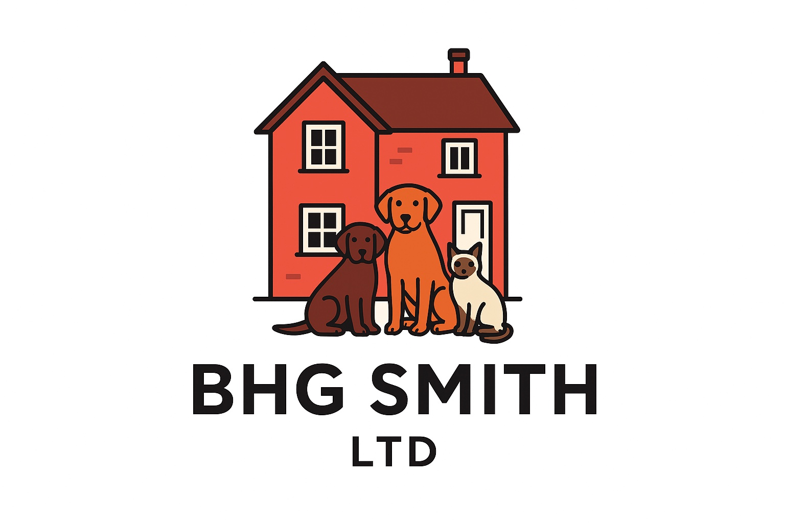

The cookbook
About Adam Cooks
I started cooking during lockdown as a way to challenge myself. Over time, I grew to love being in the kitchen, trying new dishes and finding ways to keep dinner interesting. I wanted one easy place to keep the recipes I’d happily make again, so I started Adam Cooks.
As the collection grew, I wanted an easier way to plan what we’d eat each week. I kept falling back on the same few dinners, so I added a meal planner to help me try something different and get the shopping list sorted in one go.
Browse the recipes